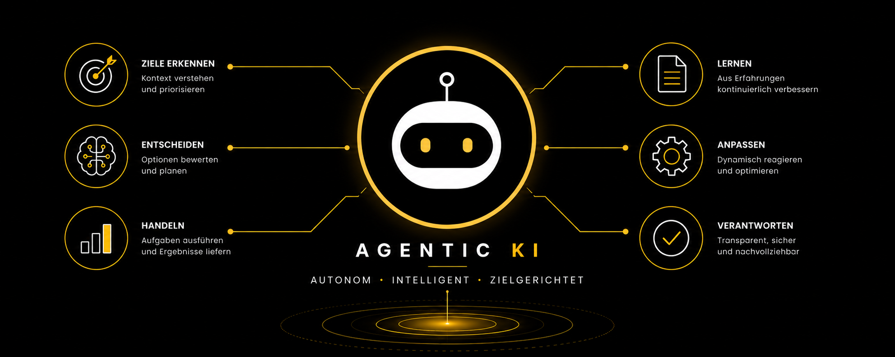

Agentic KI im Gesundheitswesen

Das KI-MIG ist seit 29.07.2026 in Kraft (BGBl. 2026 I Nr. 223) und benennt die Bundesnetzagentur als zentrale Marktüberwachungsbehörde für KI-Systeme in Deutschland – die technologieneutrale KI-System-Definition der EU-KI-VO (Art. 3 Nr. 1) erfasst dabei ausdrücklich auch autonom agierende KI-Agenten. Die vollen Hochrisiko-Pflichten hat der Digital Omnibus zwar auf den 2. Dezember 2027 (Anhang III) bzw. 2. August 2028 (Anhang I) verschoben – Governance-Grundlagen wie Human-in-the-Loop und klare Verantwortlichkeiten sollten bei Agentic-AI-Einführungen aber unabhängig davon jetzt verankert werden.
KI handelt nicht mehr nur – sie plant, entscheidet und koordiniert eigenständig.
Agentic AI markiert einen Systemwechsel: KI-Systeme verfolgen Ziele autonom, nutzen externe Werkzeuge, bauen Langzeitgedächtnis auf und koordinieren mehrere Agenten – ohne Schritt-für-Schritt-Anweisungen durch Menschen.
Für Kliniken, Pflegeeinrichtungen und alle, die im Gesundheitswesen Verantwortung tragen, stellt sich damit keine technische, sondern eine Governance-Frage: Wer steuert, wer prüft, wer haftet?
Zwei Quellen – eine Botschaft: Agentic AI ist kein Zukunftsthema. Die Governance-Frage muss jetzt beantwortet werden.
Was Agentic AI von klassischen KI-Systemen unterscheidet
Klassische KI-Systeme – auch Large Language Models – reagieren auf Eingaben. Agentic AI hingegen setzt sich eigene Teilziele, plant, koordiniert und adaptiert – auf Basis eines persistenten Gedächtnisses und externer Werkzeuge.
- Antwortet auf konkrete Eingaben
- Kein Langzeitgedächtnis über Sitzungen hinweg
- Abhängig von klaren menschlichen Prompts
- Verarbeitet in der Regel Text und Bilder
- Für klar definierte Einzelaufgaben geeignet
- Begrenzte Anbindung externer Systeme
- Verfolgt Ziele autonom, setzt Teilziele selbst
- Persistentes Langzeitgedächtnis über Aufgaben hinaus
- Koordiniert mehrere Agenten gleichzeitig
- Nutzt externe Werkzeuge, Datenbanken, APIs
- Adaptiert bei Hindernissen eigenständig
- Für komplexe, dynamische Prozesse konzipiert
Quelle: EDPS TechSonar, Agentic AI (2025)
Wie Agentic AI im Krankenhaus konkret eingesetzt wird
Das Fraunhofer IAIS beschreibt einen strukturierten Einsatz über die gesamte stationäre Versorgungskette – von der Aufnahme bis zur Entlassung. KI-Agenten fungieren dabei nicht als Einzelwerkzeuge, sondern als koordinierende Serviceschicht.
Diagnose & Therapie
KI-Agenten aggregieren Patientenhistorie, Echtzeit-Daten aus KIS und PACS und liefern Impulse zu möglichen Behandlungspfaden. Human-in-the-Loop bleibt zwingend.
Medikation
Individuelle Medikationspläne auf Basis von Alter, Gewicht, Diagnosen und Unverträglichkeiten – kontinuierlich überwacht und automatisch angepasst, inkl. Nachbestellung.
Arztbriefgenerierung
Strukturierte Zusammenführung aus Anamneseprotokoll, Befunden, Fremdberichten – inkl. ICD/OPS-Codierung, Übersetzung und Qualitätssicherung durch den Agenten.
Qualitätsregister
Automatisiertes Screening klinischer Dokumente, Extraktion relevanter Parameter, Entlastung des Personals bei Zertifizierungsanforderungen.
Vier Agenten – ein Ziel: koordinierte Diagnoseunterstützung
Analyse von Röntgenbildern und MRT-Aufnahmen – autonom und parallel.
Abruf aus elektronischen Krankenakten: Anamnese, Laborwerte, Medikation.
Synthese aller Inputs, Anforderung weiterer Tests, Diagnosevorschläge.
Koordiniert alle Agenten, managt Fehlerbehandlung und Nutzerinteraktion.
Was die erhöhte Autonomie für Datenschutz und Haftung bedeutet
Der Europäische Datenschutzbeauftragte (EDPS) benennt konkrete Risikodimensionen – die für das Gesundheitswesen mit seinen besonders schützenswerten Daten besonders relevant sind.
| Risikodimension | Beschreibung (EDPS) | Relevanz im Gesundheitswesen | Governance-Anforderung |
|---|---|---|---|
| Datenzugriff & Umfang | Agenten können auf Geräten und Systemen umfassend auf Daten zugreifen – inkl. aller gespeicherten Informationen. | Hoch Patientendaten nach Art. 9 DSGVO, Schweigepflicht, KHZG-Anforderungen | Datenzugriff auf das Notwendige begrenzen, Privacy by Design |
| Zweckentfremdung | Agentic AI kann autonom neue Verwendungszwecke für Daten entwickeln, die vom Original nicht abgedeckt sind. | Hoch Verletzung der Zweckbindung nach Art. 5 DSGVO | Technische Beschränkung auf definierten Zweck, Audit-Logging |
| Transparenz | Komplexe Agentenentscheidungen sind für Nutzer kaum nachvollziehbar – Erklärbarkeit sinkt. | Hoch Ärztliche Dokumentationspflicht, Nachweispflichten EU AI Act | Explainable AI, Entscheidungsprotokolle, Human-in-the-Loop |
| Profilbildung | Daten aus diversen Quellen werden kombiniert – es entstehen umfassende Nutzerprofile ohne explizite Einwilligung. | Hoch Verletzung des Rechts auf informationelle Selbstbestimmung | Datenminimierung, Einwilligungsmanagement, DSGVO-Folgenabschätzung |
| Verantwortungslücke | Bei Schaden durch Agentic AI ist unklar, ob Haftung beim Entwickler, Betreiber oder Nutzer liegt. | Hoch Trägerhaftung, Krankenhausrecht, Patientensicherheit | Klare Governance-Zuständigkeiten, vertragliche Verankerung |
| Bias & Fairness | Autonome Datenkollektionsprozesse können Verzerrungen verstärken – schwer erkennbar und korrigierbar. | Mittel Ungleiche Versorgung, Diskriminierungsrisiken | Algorithmen-Audits, repräsentative Trainingsdaten, Monitoring |
| Drittanbieter-Risiko | Agenten interagieren mit externen Diensten – dabei können Daten geteilt werden, ohne dass Nutzer dies wissen. | Mittel Auftragsverarbeitung, Datenweitergabe in Drittstaaten | Vendor-Management, AVV, Drittstaaten-Prüfung |
| Prompt Injection | Schadhafte Eingaben können Agenten manipulieren und zur Datenweitergabe verleiten. | Hoch Angriffsvektoren in klinischen Systemen | IT-Sicherheitskonzept, Pentesting, BSI-Standards, Patch-Management |
Welche Rechtsrahmen für Agentic AI im Gesundheitswesen gelten
↗ A2A auf GitHub und Anthropic’s Model Context Protocol (MCP)Model Context Protocol (MCP)Offener Standard von Anthropic, der KI-Modellen strukturierten, sicheren Zugriff auf externe Werkzeuge, Datenbanken und Dienste ermöglicht – unabhängig vom Anbieter. Bildet die Basis für werkzeuggestützte Agenten-Architekturen.
↗ MCP bei Anthropic sind offene Standards, die KI-Agenten-Interoperabilität ermöglichen. Beide befinden sich noch in Entwicklung – und stellen regulatorisch noch ungeklärte Schnittstellenfragen. Für Einrichtungen bedeutet das: Vendor-Verträge und Schnittstellen-Governance müssen mitgedacht werden.
Die eigentliche Leitungsfrage lautet nicht: „Welche KI-Agenten setzen wir ein?“
Sondern: Welche Agentic-AI-Anwendungen können wir fachlich sinnvoll, datenschutzkonform, mit klar geregelter Haftung und mit dokumentierter menschlicher Aufsicht betreiben?
Das Fraunhofer IAIS benennt interdisziplinäre Zusammenarbeit und iterative Entwicklung als Kernanforderungen. Der EDPS betont: Accountability-Lücken müssen vor dem Deployment geschlossen werden – nicht danach.
Was beim Einsatz von Agentic AI in Einrichtungen typischerweise schiefgeht
Tool-first statt Governance-first
Die Einrichtung entscheidet sich für ein Agentic-AI-System, bevor Datenschutzfolgenabschätzung, Risikoklassifizierung nach EU AI Act und Aufsichtskonzept definiert sind. Reparaturkosten sind hoch – Haftungsrisiken noch höher.
Automatisierungsbias ohne Gegenkontrolle
Mitarbeitende vertrauen den Agenten-Outputs ohne kritische Prüfung. Fehler kaskadieren durch mehrere Entscheidungen, bevor sie erkannt werden. Besonders riskant in Medikationsmanagement und Diagnoseunterstützung.
Fehlende Kompetenz auf allen Ebenen
Weder Leitung, noch Fachbereich, noch IT kennen die Grenzen und Risiken des eingesetzten Systems. Art. 4 EU AI Act verlangt dokumentierte KI-Kompetenz – nicht nur allgemeine Schulungen.
Agentic-KI-Bereitschafts-Check
Ist Ihre Einrichtung bereit, Agentic AI verantwortungsvoll einzusetzen? Wählen Sie alle Aussagen aus, die auf Ihre Organisation zutreffen:
Pragmatischer Fahrplan: Agentic AI governance-konform einführen
Basierend auf dem 7-Schritte-Modell des Fraunhofer IAIS für KI-Implementierung im Krankenhaus – ergänzt um die Governance-Anforderungen des EDPS und des EU AI Act.
Leitung, IT, Datenschutz, QM und Compliance definieren gemeinsam Zweck, Grenzen und Verantwortlichkeiten für Agentic-AI-Systeme.
Regulatorische Rahmenbedingungen klären: EU AI Act-Klassifizierung, MDR-Prüfung, DSGVO-Folgenabschätzung, BSI IT-Grundschutz.
Datenbasis prüfen, Zugriffsgrenzen definieren, Interoperabilitätsstandards (A2A, MCP, HL7 FHIR) und Drittanbieter-Governance festlegen.
Prototyp in kontrollierter klinischer Testumgebung – mit definiertem Human-in-the-Loop, Monitoring und Nutzerfeedback-Schleifen.
Leopoldina FOKUS Nr. 8 ‧ Juni 2026 ‧ Nationale Akademie der Wissenschaften
Agentische KI im Gesundheitssystem: Chancen und Herausforderungen
Der aktuelle Policy Brief der Deutschen Akademie der Naturforscher Leopoldina fasst den wissenschaftlichen Konsens zusammen – und formuliert klare Handlungsempfehlungen an Politik und Einrichtungen.
Kernunterschied laut Leopoldina
Konventionelle KI
Unterstützt bei einzelnen Aufgaben – z. B. Bildauswertung oder Datenanalyse. Sie gibt Hinweise, entscheidet aber nicht selbst. Das Behandlungsteam trifft alle weiteren Entscheidungen.
Agentische KI ▶
Plant und koordiniert eigenständig Schritte in der Versorgung. Sie kann administrative Tätigkeiten übernehmen, leitlinienkonforme Therapien vorschlagen und Prozesse innerhalb eines menschlich verantworteten Rahmens autonom ausführen.
■ Chancen laut Leopoldina
Was agentische KI leisten kann
- Komplexe Aufgaben strukturieren: multimodale Daten integrieren, Behandlungsverläufe personalisieren
- Workflows autonom steuern: administrativen „clerical burden“ reduzieren, Fachkräfte entlasten
- Personalisierte Prävention unterstützen: digitale Agenten als Gesundheitscoach
- Konsistenz in Pathologie und Bildgebung erhöhen – durch skalierbare KI-gestützte Analysen
- Fachkräftemangel demografisch auffangen – ohne Leistungsbeschränkungen
■ Risiken laut Leopoldina
Was frühzeitig adressiert werden muss
- Transparenz & Verantwortbarkeit: Fehlerhafte Schlussfolgerungen können schwerwiegende Folgen haben
- Sensible Daten: Verknüpfung großer Datenmengen erhöht das Risiko unfreiwilliger Offenlegung
- Zielkonflikt: Datenschutz vs. Versorgungsgerechtigkeit – politisch zu entscheiden, nicht technisch
- Deskilling: Wenn Fähigkeiten vollständig an KI delegiert werden, verkümmern sie beim Personal
- Cybersicherheit: Autonome Systeme vergrößern die Angriffsoberfläche erheblich
■ Handlungsempfehlungen der Leopoldina
Was jetzt geschaffen werden muss
- Technologische Souveränität: Partnerschaften zwischen Universitätskliniken, Forschungseinrichtungen und Industrie schaffen – domänenspezifische Foundation Models als Hightech-Agenda-Schwerpunkt
- Regulatorischer Rahmen: Datenschutz und Datennutzung intelligent verbinden – Aufsichtsbehörden als Berater, nicht nur als Kontrollinstanz
- Legal Design Thinking: Prozessketten so gestalten, dass KI-gestützte Workflows und menschliche Verantwortung zusammengeführt werden
- Regionale Kompetenzzentren: Expertise aus Medizin, Informatik und Datenwissenschaft bündeln und schnell in Anwendung bringen
|
Quelle 1
EDPS TechSonar: Agentic AI – Datenschutzrechtliche Einordnung durch den Europäischen Datenschutzbeauftragten. European Data Protection Supervisor, 2025. Autor: Andy Goldstein. EDPS TechSonar |
Quelle 2
Fraunhofer IAIS Whitepaper: „Healthcare Agents im Einsatz – Die nächste Generation der medizinischen KI-Assistenz“. Fraunhofer IAIS, März 2025. Autoren: Mackay, Ebert, Schellinger, Antweiler, Rüping. Fraunhofer IAIS |
Agentic AI governance-konform einführen?
Ich zeige Ihnen, wie Sie Risikobewertung, Datenschutz, Human-in-the-Loop und EU AI Act-Anforderungen strukturiert verbinden. |
Thomas Bade hat alle Inhalte inhaltlich geprüft, fachlich bewertet und freigegeben.